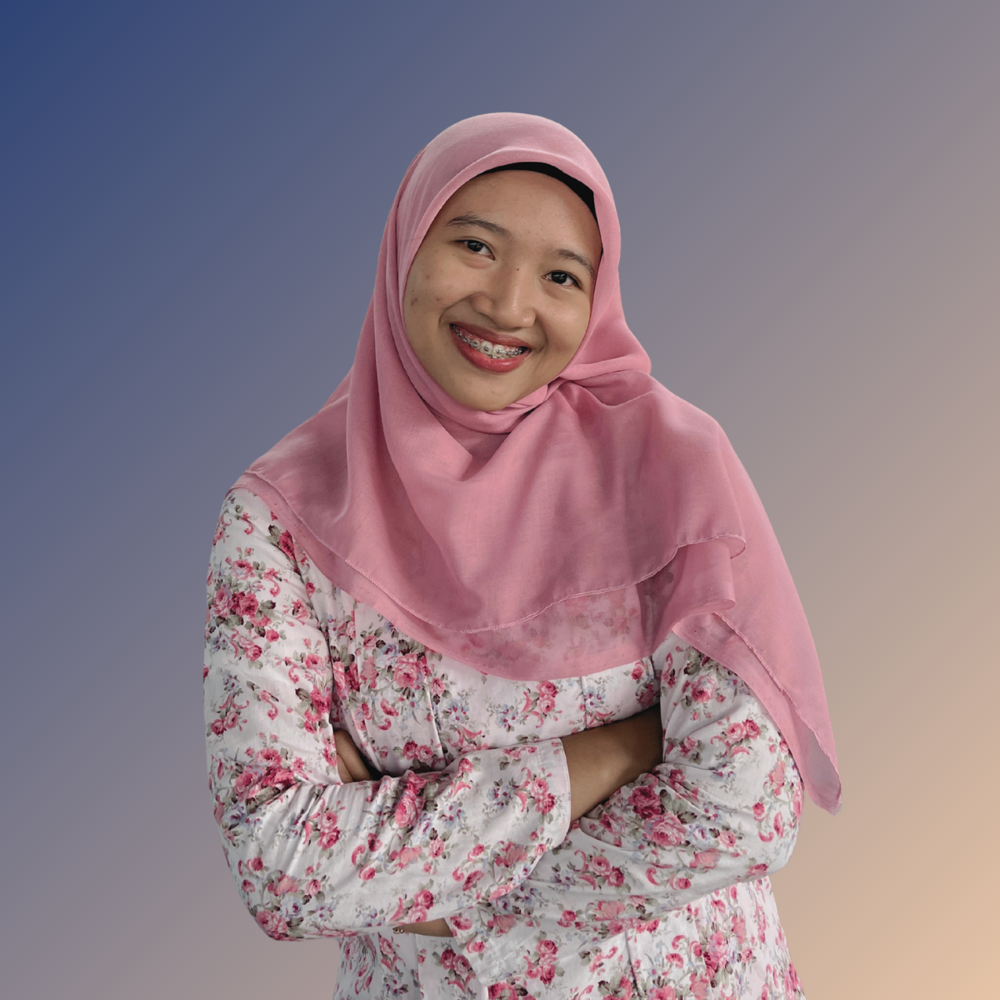

Calon Guru Profesional
Halo, saya
Farros Shaffira
Selamat datang di E-Portofolio saya. Platform ini adalah rekam jejak digital perjalanan saya selama mengikuti Pendidikan Profesi Guru (PPG), menampilkan dedikasi, artefak pembelajaran, serta refleksi diri menuju pendidik profesional.

Inovatif
Adaptif
Edukatif